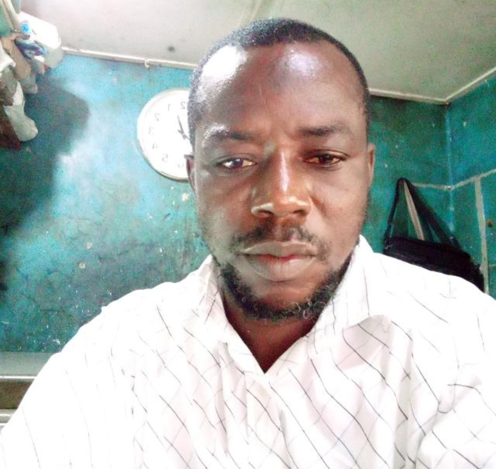

About
ACM
Prayer time
Anjola-Anobi Central Mosque View
Anjola-Anobi Central Mosque Members
Contact Us

IMAM Ibrahim
Imam Ibrahim is indigen of Eti-osa, Yoruba by Tribe, and has been serving as an Imam Since late 2021. Imam Ibrahim holds a Bachelor degree and Islamic Studies. He is married and his blessed with 3 childreen.
<<<< © Anjola-Anobi Central Mosque >>>>
back to top